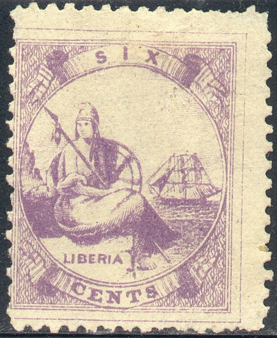
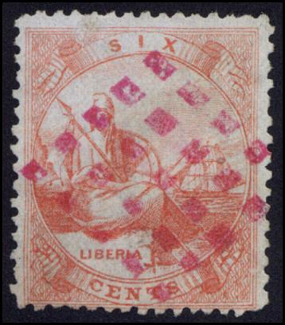
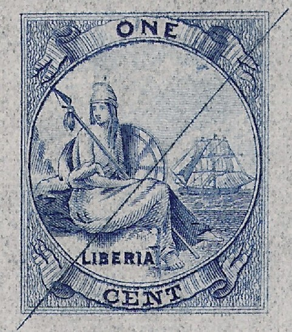
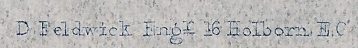

{kind=link}



Return To Catalogue - Liberia 1860-1880, forgeries, part 1 - Liberia 1860-1880, forgeries, part 2 - Liberia 1881-1901 - Liberia 1893-1906 - Liberia 1909 issue - Liberia 1915 onwards - Liberia miscellaneous
Note: on my website many of the
pictures can not be seen! They are of course present in the
catalogue;
contact me if you want to purchase it.
1 c blue 2 c red 6 c red 6 c lilac 12 c blue 12 c yellow 24 c green 24 c red Surcharged (1916) with '1916' and value

3 (red) on 6 c lilac 5 on 12 c yellow 10 on 24 c red
For the specialist; The values 6 c red, 12 c blue and 24 c green were first issued in 1860, there is no outer line around the frame, the stamps are very closely printed together. The perforation was 11 1/2 to 12 and the stamps were perforated close or into the frame. In 1864 a new issue with an outer line (about 1 mm from the stamp) was made, the stamps are printed about 5 mm apart now. The perforation is still 11 1/2 to 12. In 1867 a third emission followed with the same perforation again (11 1/2 to 12). The colours are lighter now, and the stamps were printed 2 to 2 1/2 mm apart. The outer line is sometimes visible and sometimes absent. In 1880 completely new colours were issued, the 1 c blue, 2 c red, 6 c lilac, 12 c yellow and 24 c red. The perforation of this fourth issue is 10 1/2. The fourth issue is often badly printed (overinked etc.).
Value of the stamps |
|||
vc = very common c = common * = not so common ** = uncommon |
*** = very uncommon R = rare RR = very rare RRR = extremely rare |
||
| Value | Unused | Used | Remarks |
| Cheapest types | |||
| 1 c | *** | *** | 1880 |
| 2 c | *** | *** | 1880 |
| 6 c red | R | R | |
| 6 c lilac | *** | *** | 1880 |
| 12 c blue | R | R | |
| 12 c yellow | *** | *** | 1880 |
| 24 c green | R | R | |
| 24 c red | *** | *** | 1880 |
| Surcharged (1916) Exist with '9' in '1916' lower, inverted, double and vertical surcharges: R to RR |
|||
| 3 c on 6 c | *** | *** | |
| 5 c on 12 c | *** | *** | |
| 10 c on 24 c | *** | *** | |
Typical mute cancel consisting of 6 parallel bars. I've also seen
similar cancels with 5 bars.

Another red mute cancel consisting of 5x5 square dots.

Typical town cancels 'HARPER LIBERIA' and 'MONROVIA LIBERIA' in a
circle
Some later town cancels, 'BUCHANAN LIBERIA' and 'MONROVIA
LIBERIA' with date int he center, reduced sizes

A German Seapost cancel 'LINIE HAMBURG WESTAFRIKA' used in 1905
on a 24 c red stamp.
I've also seen pencancelled stamps.
Reprint of a 'proof' ,12 c red, with part of watermark, reduced
size.
Another 'proof' reprint of the 1 c value, reduced size
 
Zoom-in of the proof and the text below it
Private reprints from unknown origin exists as 'proofs' with a defaced plate of a single stamp in a minisheet. There is a diagonally line across the stamp in these reprints (from the defaced plate). They were made in black, scarlet and rose for all three first stamps (6 c, 12 c and 24 c) and in the selected color of each value. On some proofs the name of the engraver 'D.Feldwick Engr 16 Holborn, E.C.' is written below the design. Some of the reprints have part of a watermark in it (see image above). Similar reprints exist for the 1881 landscape stamp. The above shown 'reprints' were sold by the Canadian stamp dealer Kasimir Bileski.
Click here for Liberia 1860-1880 forgeries, part 1 or Liberia 1860-1880, forgeries, part 2.
Literature:
Rogers, Henry H., A Century of Liberian Philately, Kasimir Bileski
(publisher), 1978, 204 pages (I haven't
read this book myself).
Stamps - Timbres-Poste - Briefmarken
{kind=link}
{kind=link}
{kind=link}